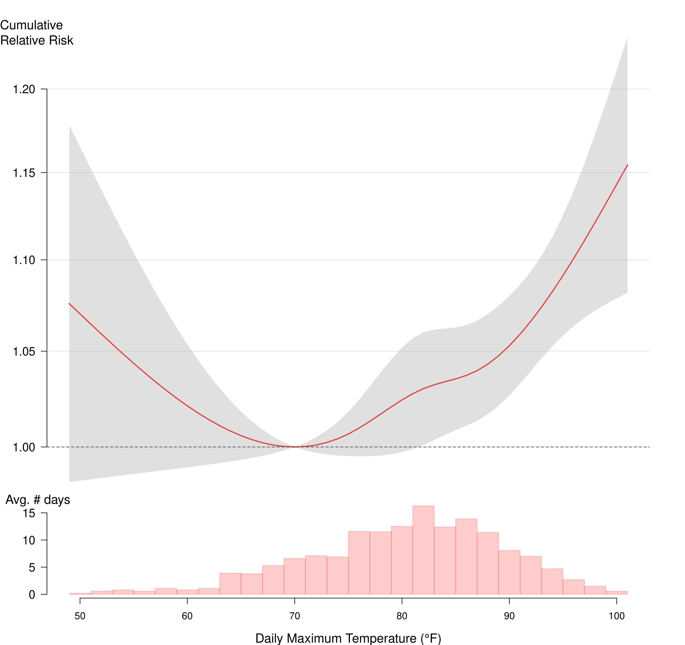

2024 NYC Heat-Related Mortality Report
Each summer, on average, an estimated 350 New Yorkers die prematurely because of hot weather in New York City (NYC). These heat-related deaths account for about 2% of all deaths over the warm season months of May through September. Of the 350 deaths:
- There was an average of 7 heat-stress deaths (caused directly by heat) per year.
- There was an average of about 340 heat-exacerbated deaths (caused indirectly by heat aggravating an underlying illness) per year.
Heat-exacerbated deaths increased in the past decade, mainly due to hotter summers overall with more “non-extreme hot days” of 82°F up to but below the extreme heat threshold (95°F). Death counts have remained steady in the most recent years.
Black New Yorkers are more likely to die from heat stress, with death rates two times higher than White New Yorkers. Black New Yorkers also have a higher likelihood of heat-exacerbated death compared to other New Yorkers. This inequity is due to past and current structural racism that creates economic, health care, housing, energy, and other systems that benefit White people and disadvantage people of color.
Lack of access to home air conditioning (AC) is the most important risk factor for heat-stress death. Among those who died from heat stress, the place of death was most often an un-air-conditioned home. Heat-exacerbated deaths were also more likely to occur at home, underscoring the importance of access to cooling at home.
NYC summers are getting hotter because of climate change. Emergency response to extreme heat must be coupled with equitable investments in structural interventions and heat mitigation measures that reduce risk throughout the season. For example, all New Yorkers will need energy efficient home cooling that they can afford to run; tree planting and greening can help reduce local temperatures while providing shade.
Introduction
Hot weather is dangerous to health, sometimes resulting in death. Heat-related deaths are preventable. In this fourth annual report on heat-related mortality, the NYC Health Department reports on heat-related deaths in three ways:
- Heat-stress deaths (also called heat stroke deaths) are caused directly by heat and happen when heat-related illnesses, such as heat exhaustion and hyperthermia, lead to death. These deaths are coded as heat-related in death certificates, and cases can be counted and investigated.
- Heat-exacerbated deaths happen when heat worsens existing chronic conditions, such as heart disease. These deaths are caused indirectly by heat and are estimated using statistical models. They are also often called “excess” mortality.
- Neighborhood impacts are tracked by looking at community-level differences in risk of heat-related death and are described using the NYC Health Department’s Heat Vulnerability Index (HVI).
Starting last year, we report estimated trends in heat-exacerbated deaths for the current and past several decades (1972-2021) in five-year rolling time windows. For heat-stress deaths, we report counts and the annual average for the past ten years (2013-2022). Please refer to the footnote on years of data available for more information about the years of data included in this report. Previous years’ reports are available here.
Heat Stress Deaths
The NYC Health Department examined heat-stress deaths occurring during the warm season months of May through September from 2013-2022. We reviewed death certificates and medical examiner investigation reports in cases where heat was recognized as a cause of death. A more detailed description of methods and data sources can be found in the Appendix Methods and Supplemental Data.
Among NYC residents, there were 69 heat-stress deaths over the 10-year period. There was an average of 7 deaths per year, with the largest yearly numbers of deaths occurring earlier in the period as a result of a severe heat wave in 2013. Most deaths occurred in July (72%), followed August (12%), June (7%), September (4%), and May (4%). As of January 2024, there were 5 heat-stress deaths in 2023, though that number is provisional and subject to change because mortality records are not yet finalized.
Figure 1: Heat-stress deaths and maximum heat index by year, NYC residents (2013-2022).
Demographics
- Black New Yorkers continue to have an age-adjusted heat-stress death rate that twice as high as that of White New Yorkers (1.2 deaths per million compared with 0.5 deaths per million) from 2013-2022. This inequity is rooted in systemic racism [1]. Lack of equitable access to resources — for example, jobs that pay a living wage, affordable and healthy housing with air conditioning, and health care — are causes of these differences in heat-related mortality.
- Death rates were higher in neighborhoods with more residents living below the federal poverty line compared with wealthier neighborhoods.
- Heat-stress deaths occurred among all age groups, with the lowest rates among people aged 20 and younger and the highest among people aged 60 and older.
- Rates of heat-stress deaths were higher among males than females.
- Age-adjusted death rates were highest in Brooklyn.
Figure 2: Demographic characteristics of heat-stress decedents (2013-2022).

Health Risk Factors
Among decedents with detailed medical examiner records available, 89% had at least one chronic health condition.
Common chronic conditions included cardiovascular disease, substance or alcohol use, mental health or cognitive conditions, and a history of diabetes.
Table 1: Medical characteristics among subset with review of health conditions in medical examiner records (n=65) (2013-2022).

Heat Exposure Circumstances
People who died from heat stress were most often exposed to dangerous heat in homes (58%, n=37 of 64 records with detailed information available about onset place). Without AC, indoor temperatures can be much higher than outdoors, especially at night, and can continue for days after a heat wave[2].
Among New Yorkers exposed in homes, and for whom there was information about the presence or absence of an AC (n=24), none had or were using AC.
Among records with enough information to determine place of heat exposure (n=64), a third (n=18, 28%) of decedents were exposed outdoors, 8% (n=5) were exposed in parked cars, and 5% (n=3) were exposed indoors at worksites.
Overall, 9% (n=6) of deaths were work-related and another 9% (n=6) were individuals noted to be experiencing or suspected to be experiencing homelessness.
About a third (n=11, 30%) of people who were exposed to dangerous heat at home had an electric fan present and on, indicating that using an electric fan without an AC cannot always prevent death during extreme heat for people who are at highest heat risk.
Previous NYC Health Department studies have found that air conditioning access differs across race and class. Black New Yorkers and low-income New Yorkers are less likely to own or use an AC during hot weather, and the main reason is cost [3]. While more than 90% of NYC households currently have air conditioning, access can be as low as 76% in neighborhoods where more people are living with limited financial resources.
Table 2: Air conditioning presence among heat-stress decedents exposed to heat in homes (2013-2022).

Heat Exacerbated Deaths
Deaths from chronic conditions that are not recognized as heat-related on death certificates can be estimated using statistical models. There are many more of these deaths than those from heat stress. They are called “excess deaths” or “heat-exacerbated deaths.” Unlike heat-stress deaths, which can be individually identified and investigated, excess deaths can be estimated only as aggregate counts. However, estimating heat-exacerbated deaths — or “mortality” — better captures the true extent of how many New Yorkers are dying due to heat.
We report estimated heat-exacerbated deaths for the current and historical data in five-year rolling time windows to characterize trends. The average natural death count per year was about 18,000 for May through September for the most recent 5-year period (2017-2021). We used time-series statistical models to compare deaths on hot days with those on cooler days. We estimated heat-exacerbated deaths using:
- An indicator (yes/no) for extreme heat event days defined by the National Weather Service’s heat advisory levels for NYC. Based on the NYC Health Department’s previous analysis of heat-exacerbated mortality, heat advisories are for at least 2 consecutive days with 95°F or higher daily maximum heat index (HI) or any day with a maximum HI of 100°F or higher.
- A range of hot daily maximum temperatures that includes both extreme heat event days and other hot days. We estimated heat-exacerbated deaths for days ranging from the median maximum daily temperature of 82°F through the highest temperature during the period.
These models were run in 5-year rolling time windows between 1972 and 2021 (last year’s report included 1971 to 2020). We included deaths occurring on the date of exposure to hot weather and over the following 3 days because previous NYC Health Department studies have shown that heat-exacerbated deaths can occur up to 3 days after the initial hot weather [4]. Detailed methods used to estimate risks and attributable deaths can be found in the Appendix Methods and Supplemental Data.
Estimated heat-exacerbated deaths — both those attributed to extreme and non-extreme hot days — declined substantially between 1972 and 2000 and plateaued after 2000 for about a decade (see Figure 3). Heat-exacerbated deaths at and above 82°F started increasing about a decade ago but plateaued in recent years (see Figure 3).
From 2017 to 2021, the most recent 5-year time window, the estimated annual average of heat-exacerbated deaths during May-September for all hot days was 338 (95% Confidence Interval [95% CI]: 140, 522). Heat-exacerbated deaths made up approximately 2% of all natural-cause deaths in the warm months in this most recent period.
The estimated annual average of heat-exacerbated deaths due to extreme heat events for 2017-2021 was 98 (95% CI: 34, 157). In contrast to the trend for both extreme and non-extreme hot days, heat-exacerbated deaths due to only extreme heat days are relatively constant over the past decade (see Figure 3).
Heat-exacerbated mortality risks were observed across the full range of hot days (maximum temperature at or above 82°F) during warm season months. Risk increased with temperature, with the largest increases occurring at the highest temperatures, and a steeper slope of relative risk above 90°F (see Figure 4). Note that, because there are more days in the range of non-extreme hot days (i.e., 82-94°F) than those in the extreme heat days (95+°F; see the histogram below the relative risk curve), these non-extreme hot days contribute more to the total heat-exacerbated deaths than the days in the extreme heat range.
Figure 3: Annual average heat-exacerbated deaths for Extreme Heat Event days, and days at or above 82°F in 5-year moving time windows. The x-axis label denotes the beginning year of 5-year windows (e.g., “2017” for 2017-2021).

Figure 4: cumulative relative risk and 95% confidence intervals of heat-exacerbated deaths for daily maximum temperature over same-day and 3 previous days, May-September (2012-2021). 
Risk Factors Associated With Heat-Exacerbated Deaths
Our updated analyses of heat-exacerbated deaths confirmed the continued elevated risk of dying at home, as well as higher odds of death among Black New Yorkers compared with other groups.
In previous analyses, heat-exacerbated deaths occurring at home increased during and shortly after extreme heat events (i.e., at or above the NYC heat advisory threshold), and Black New Yorkers had higher odds of death compared to other New Yorkers during the years 2000-2011[5]. We repeated this case-only analysis with recent data (May – September 2012-2021). We also examined at-home deaths (approximately 28 percent of all deaths during the study period) to see how the proportion of at-home deaths changes by temperature across the entire warm season temperature range. For this analysis, we used five temperature ranges (quintiles of the average of the same day through the previous 3 days daily maximum temperature). See the Appendix Methods and Supplemental Data for more information.
We again found elevated risk of heat-related death at home and for Black New Yorkers. The estimated risk for at-home deaths and for Black New Yorkers for extreme heat days for 2012-2021 was the same, with an odds ratio of 1.06 (95% CI: 1.02, 1.11). Figure 5 shows the odds ratios of the at-home deaths as a function of the five temperature ranges with days less than 74°F as the reference. Although the odds ratio — the proportion of at-home deaths relative to that for days with daily maximum temperature less than 74°F — was highest for the hottest temperature range (>86°F), the other temperature ranges also show elevated odds ratios. This suggests that the risk of dying at home increases as the temperature increases - both at hot and extreme temperatures.
In addition, at-home risk was elevated across racial and ethnic groups, with a higher proportion of at-home deaths for non-Hispanic White, Black, and Hispanic New Yorkers at the hottest temperatures (Figure 6). The number of deaths for Asian decedents — about eight percent of all deaths — and decedents of other race and ethnicities were too small to estimate results with precision.
These results further underscore the importance of at-home cooling, irrespective of race and ethnicity.
Figure 5: Odds ratios (relative to < 74°F range) and 95% confidence bands of at-home deaths as a function of range (quintiles) of daily maximum temperature averaged over the date of death and three previous days.


Hotter summers
The five average temperature range categories (of 0-3 days average of daily maximum temperature) used in the analysis above each account for approximately 20% of days in the warm months (May through September) during 2012-2021. Due to climate change, however, the proportion of the number of days that fall into the higher temperature range has been increasing. Figure 7 shows the average number of days over running 10-year time windows for each of the five temperature ranges since 1972.
- The number of days in the two cooler temperature ranges (<74°F and 74-79°F) have been declining, whereas the number of days in the two hotter temperature ranges (84-86°F and >86°F) have been increasing. In particular, the number of days for the hottest temperature range (>86°F) more than doubled—from 14 to 32 days per summer on average—over the five decades with a steadily increasing trend.
- The measurable and significant rise in hot summer days highlights the urgency for the city to achieve universal access to at-home cooling, combined with equitable access to affordable energy for low-income households to ensure safe indoor thermal environments for the even hotter summers anticipated in the coming decades.
Figure 7: Trend in the number of days per warm season (May-September, 153 days) for the 4-day average daily maximum temperature across five temperature ranges. Each point represents the average number of days of that year and previous nine years of data in 10-year rolling time windows.

Community-Level Impacts
The Heat Vulnerability Index (HVI) shows differences in community-level heat impacts during and shortly after extreme heat events (5). The HVI combines environmental factors (measures of a neighborhood’s average surface temperature and percentage of green space) with social factors (percentage of homes with air conditioning, residents’ median income, and the percentage of residents who are Black) to develop a relative measure of a neighborhood vulnerability to heat.
Unlike many social vulnerability indices, the HVI is derived from NYC mortality data, which means that neighborhoods with elevated risk identified by the index are those areas with elevated heat-exacerbated deaths during extreme heat events. HVI scores range from 1 (lowest risk) to 5 (highest risk). The relative heat mortality risk of each Neighborhood Tabulation Area (NTA) can be explored here.
Including race in the HVI analysis is critical to understanding the impact of heat: structural racism has resulted in neighborhood disinvestment, racist housing policies, fewer job opportunities and lower pay, and limited access to high-quality education and health care, all of which are associated with health risks including those related to heat. Read more about how structural racism affects housing and public health and the history of redlining and how it impacts public health in NYC. The odds of dying are higher in census tracts with higher HVI scores, during extreme heat and on non-extreme hot days.
The best indicator of neighborhood-level heat impacts is the HVI (see map 1), which shows differences in heat-exacerbated mortality risk. The number of heat-stress deaths by NTA (map 2) should be interpreted with caution. The NTAs are small and the number of deaths at this level is also small and unreliable, so it is difficult to tell whether differences between areas are due to random fluctuation or a difference in risk.


Conclusion
Heat contributes to the deaths of about 350 New Yorkers, on average, each year during the warm season of May through September. Inequities by race and income persist in the people and neighborhoods most impacted. Deaths across all races, however, were more common at home, underscoring the importance of access to and affordability of home cooling to prevent death.
To prepare for a hotter future and prevent heat-related deaths, the City needs long-lasting, structural interventions alongside heat emergency preparedness and response. Adapting to a hotter climate means the City must:
- Ensure equitable access to life-saving residential cooling for all New Yorkers.
- Implement maximum temperature regulations during the summer months for tenants as laid out in 2023 PlaNYC: Getting Sustainability Done.
- Consider mandates on property owners to provide tenants with AC without additional surcharges.
- Help eligible residents apply for a free air conditioner with installation through the Home Energy Assistance Program (HEAP)’s Cooling Assistance Component.
- Protect the electrical grid, which can be strained during hot weather, including by discouraging excess cooling in offices and commercial establishments.
- Advocate for the State and utilities to make summertime utility costs affordable for low- and middle-income New Yorkers so they can use AC to protect themselves from the heat.
- Expand HEAP Cooling Assistance Component benefits to include summer utility costs.
- Prohibit electricity disconnections during hot weather, even if bills are unpaid.
- Make energy prices affordable for all New Yorkers through affordable energy rates for low- and middle-income customers.
- Fund energy efficient home improvements to help reduce family energy costs and decrease pressure on the electrical grid.
- Invest in local resiliency to make all NYC neighborhoods and residents cooler and safer.
- Implement green infrastructure projects, especially in high HVI neighborhoods, including planting trees and other greenery and expanding cool roofs.
- Support community-based organizations (CBO) working to reduce the health impacts of climate change.
- Include CBOs and residents in decision-making about and investments in community infrastructure and public space.
- Fund and provide technical assistance for programs that support CBOs to build community resilience through social cohesion and access to physical and mental health resources that can help people stay safe in the heat.
- Work with local, state, and federal partners to ensure that indoor and outdoor workplaces are safe during hot weather.
- Continue to strengthen emergency response to extreme heat, such as opening cooling centers, expanding awareness of other cool indoor spaces, and issuing heat-health warnings, prioritizing people and communities with the greatest need.
More data and information about heat, climate, and health is available on the NYC Health Department’s Climate and Health page. Learn more about what the City is doing to mitigate the effects of heat as part of PlaNYC: Getting Sustainability Done.
- Bailey ZD, Krieger N, Agénor M, Graves J, Linos N, Bassett MT. Structural racism and health inequities in the USA: evidence and interventions. Lancet. 2017 Apr 8;389(10077):1453-1463. doi: 10.1016/S0140-6736(17)30569-X.
- Vant-Hull, B., Ramamurthy, P., Havlik, B., Jusino, C., Corbin-Mark, C., Schuerman, M., Keefe, J., Drapkin, J. K., & Glenn, A. A. (2018). The Harlem Heat Project: A Unique Media–Community Collaboration to Study Indoor Heat Waves, Bulletin of the American Meteorological Society, 99(12), 2491-2506. Retrieved Jan 30, 2023, from https://journals.ametsoc.org/view/journals/bams/99/12/bams-d-16-0280.1.xml
- Madrigano J, Lane K, Petrovic N, Ahmed M, Blum M, Matte T. Awareness, Risk Perception, and Protective Behaviors for Extreme Heat and Climate Change in New York City. Int J Environ Res Public Health. 2018 Jul 7;15(7):1433. doi: 10.3390/ijerph15071433.https://www.ncbi.nlm.nih.gov/pmc/articles/PMC6069135/
- Metzger KB, Ito K, Matte TD. Summer heat and mortality in New York City: how hot is too hot? Environ Health Perspect. 2010 Jan;118(1):80-6. doi: 10.1289/ehp.0900906. PMID: 20056571; PMCID: PMC2831972. https://ehp.niehs.nih.gov/doi/10.1289/ehp.0900906
- Madrigano J, Ito K, Johnson S, Kinney PL, Matte T. A Case-Only Study of Vulnerability to Heat Wave-Related Mortality in New York City (2000-2011). Environ Health Perspect. 2015 Jul;123(7):672-8. doi: 10.1289/ehp.1408178. Epub 2015 Mar 17. https://www.ncbi.nlm.nih.gov/pmc/articles/PMC4492264/